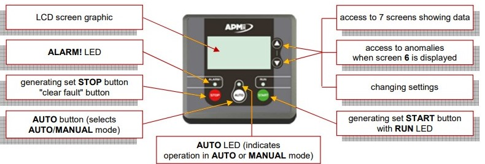
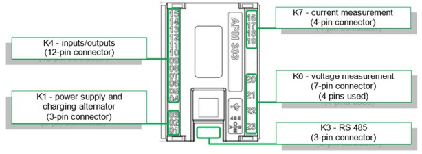
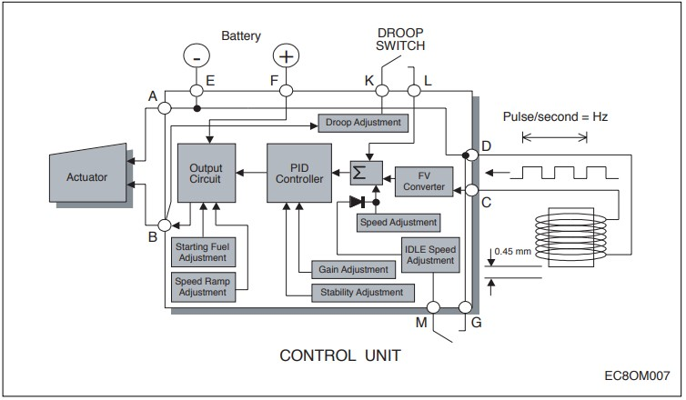
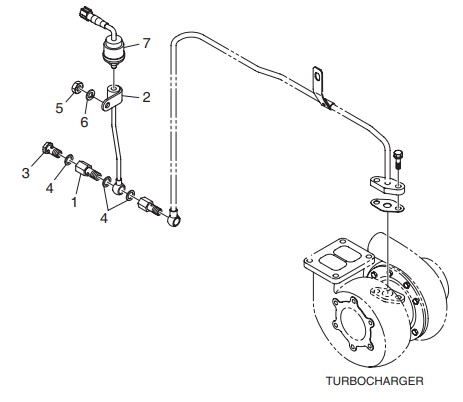

🛑 BARRERA DE SEGURIDAD OBLIGATORIA
El Sistema de Control, Protecciones e Instrumentación está compuesto por los sensores de presión y temperatura, regulador de velocidad, parada de emergencia y el tablero. Para desbloquear el manual técnico de estos subconjuntos, el operador debe aprobar la validación de EPP y Procedimientos. Toda intervención requiere estrictamente una dotación de 2 personas.
📋 Verificación de EPP e Indumentaria Personal

🔒 1. Permisos, LOTO y Control de Energías Residuales
El bloqueo y etiquetado (LOTO) es la medida de base, pero no la única. Antes de intervenir los actuadores y sensores, se debe tramitar el Permiso de Trabajo y el Análisis Previo del Riesgo (ART). Se exige identificar y controlar las siguientes energías residuales operativas:
Existencia de tensión en baterías de arranque, capacitores del tablero APM303 y alternador de carga.
Control: Desconectar el borne negativo (-), aplicar candado y tarjeta LOTO. Esto es de carácter ineludible para la prevención del arranque inesperado al "barrar" o girar el motor manualmente durante el ajuste metrológico del sensor magnético.
El colector de escape, turbocompresor, block, aceite y refrigerante alcanzan temperaturas criticas (sobre 100°C) tras la detención.
Control: Respetar curvas de enfriamiento. Si un sensor del bloque está agripado y su extracción mecánica falla, requiriendo la aplicación de llama abierta (soplete) para dilatar el material, es obligatorio tramitar un Permiso de Trabajo en Caliente previamente.
Circuito de refrigeración presurizado, galerías de lubricación (hasta 10 bar) y extrema proximidad a las cañerías de alta presión de inyección.
Control: Despresurizar el circuito mediante purgas lentas y controladas. Dado que los sensores están adyacentes al sistema de inyección (160-220 kg/cm²), durante las pruebas existe un alto riesgo de inyección subcutánea; es imperativo el uso de pantallas faciales.
El turbocompresor y el ventilador del radiador continúan girando a altas RPM después del corte de combustible.
Control: Prohibición absoluta de aproximarse al regulador de velocidad o a los sensores ubicados en la cara frontal del motor hasta confirmar el cese total, visual y auditivo, de la inercia rotacional.
Riesgo presente ante componentes desmontados, izados o suspendidos (Ej. retiro de consolas, placas de potencia o reemplazo del actuador mecánico).
Control: Planificación de eslingas, uso de tecles certificados para el izaje de componentes mayores, y estricta prohibición de transitar o manipular bajo cargas suspendidas.
Presencia de diésel, aceite lubricante contaminado, refrigerante glicolado y aerosoles solventes dieléctricos para limpieza electrónica.
Control: Consultar obligatoriamente la hoja de datos de seguridad (HDS) de los químicos aplicados. Garantizar correcta ventilación y atmósfera libre de gases explosivos. Toda placa quemada, envase a presión o paño contaminado por hidrocarburos está sujeto a la gestión de residuos peligrosos (RESPEL), considerando que a bordo rige de forma estricta el Anexo I del MARPOL.
📊 2. Criticidad de Subconjuntos (Cálculo NPR)
Evaluación técnica de los subconjuntos. El Número de Prioridad de Riesgo se calcula matemáticamente: NPR = Severidad (S) × Ocurrencia (O) × Detección (D). Todo componente con un NPR superior a 50 o con Severidad extrema (≥8) se clasifica con justificación técnica como Crítico.
| Subconjunto | Modo de Falla y Consecuencia Operativa | S | O | D | NPR | Clasificación y Justificación |
|---|---|---|---|---|---|---|
| Regulador de velocidad (Gobernador / Actuador) | Atascamiento mecánico o falla magnética del Pickup. Provoca inestabilidad de frecuencia o sobrerrégimen (Overspeed), requiriendo corte de inyección de emergencia. | 8 | 4 | 3 | 96 | Crítico. Afecta la estabilidad eléctrica de la red o destruye el motor por sobrerrégimen. |
| Sensores de Presión y Temperatura | Falsa lectura por degradación resistiva (fuera de rango). El APM303 no activará la protección automática ante un fallo térmico/hidráulico real. | 8 | 4 | 4 | 128 | Crítico. La pérdida de protección automática resulta en daño catastrófico al motor. |
| Tablero de Control (APM303) | Pérdida de comunicación o falla de CPU por fatiga térmica/vibración. Resulta en imposibilidad total de arranque o detención intempestiva. | 8 | 3 | 2 | 48 | Crítico. Inhabilita por completo la función del generador de proveer respaldo a la red. |
| Parada de Emergencia | Corrosión de contactos internos Normalmente Cerrados (Falla Oculta). Impide el corte manual y físico de la energía ante un evento extremo. | 9 | 2 | 8 | 144 | Crítico (Falla Oculta). Alta severidad por comprometer la integridad humana en atrapamientos. |
| Alarmas del Tablero | Zumbador o LED de pre-alarma quemado (Falla Oculta). El equipo opera normalmente, pero el operador es incapaz de percibir advertencias. | 5 | 2 | 7 | 70 | No Crítico. Falla oculta latente, pero el APM303 detendrá el motor ante una falla real sin depender del LED. |

Figura 1: Interfaz del Tablero de Control APM303 y disposición física del actuador de Parada de Emergencia.
🛠️ 3. Tareas, Horas-Hombre y Requerimiento de Herramientas
| Tarea de Mantenimiento Integral | Dotación Mínima | Duración (h) | Horas-Hombre (HH) |
|---|---|---|---|
| Diagnóstico de cuadro de control, limpieza de placas, calibración micrométrica de regulador de velocidad, sustitución y torque de sensores del bloque. | 1 Eléctrico/Inst. 1 Mecánico |
2.0 h | 4.0 HH |
*Nota: El origen de las estimaciones de Horas-Hombre (HH) corresponde a un cálculo analítico propio del grupo, combinando la medición directa de accesibilidad física en el laboratorio de máquinas y utilizando como referencia los parámetros de la literatura técnica de Dev, Saha y Bruce (2022).
Especificación Estricta de Herramientas e Instrumentos
- Instrumentos de Medición (Requieren Certificado de Calibración Vigente):
- Multímetro digital True-RMS para diagnóstico de continuidad en placas y relés.
- Calibrador de lazos de corriente (4-20mA) para simulación inyectada de parámetros de sensores hacia el APM303.
- Juego de Galgas de Espesores (Feeler Gauge) de 0.05 a 1.0 mm, vitales para el ajuste de la luz libre (Air gap) del sensor magnético.
- Herramientas Genéricas y Aisladas:
- Juego de llaves punta corona métricas (10, 12, 14, 17, 19 y 22 mm) para desacople de bulbos, varillaje de gobernador y terminales.
- Juego de destornilladores de precisión (2.5 mm y 3.5 mm) con aislación eléctrica certificada (1000V), de uso estricto y obligatorio para intervenir las borneras K1 y K6 del controlador APM303 sin generar cortocircuitos por proximidad.
- Apriete de Precisión (Torque):
- Torquímetro de rango bajo (1.0 a 10.0 kg·m) con calibración vigente. De uso obligatorio para la correcta instalación y asentamiento de las arandelas de cobre en el bloque. Los valores exigidos por el manual del fabricante Doosan son:
- Tornillería de soportes de actuador (M10, Grado 8.8): 4.4 kg·m.
- Sensores de temperatura y presión (hilos M14x1.5): 4.1 a 4.3 kg·m.
- Torquímetro de rango bajo (1.0 a 10.0 kg·m) con calibración vigente. De uso obligatorio para la correcta instalación y asentamiento de las arandelas de cobre en el bloque. Los valores exigidos por el manual del fabricante Doosan son:
- Insumos Químicos: Solvente limpiador de contactos electrónicos de secado rápido (con HDS a la vista) y sellador de roscas de teflón líquido de grado industrial.

Figura 2: Arquitectura de conexiones traseras y distribución de borneras de control K1 y medición K6 del APM303.
⚙️ 4. Procedimiento de Mantenimiento (Paso a Paso)
Fase 1: Preparación, Análisis de Riesgo (ART) y Aislamiento de Energías
Tramitar y documentar en el sitio el Análisis Previo del Riesgo (ART) pertinente a instrumentación y el Permiso de Trabajo Eléctrico. Verificar en la HDS del solvente las indicaciones para evitar intoxicación y asegurar correcta ventilación y atmósfera. Proceder al aislamiento eléctrico: apagar el controlador, dirigirse a las baterías y desconectar obligatoriamente el borne negativo (-) instalando candados LOTO. Verificar Energía Cero con multímetro en bornes K1/K6. Esta acción previene categóricamente el arranque inesperado al barrar el motor.
Fase 2: Intervención del Tablero de Control y Parada de Emergencia
Tras asegurar la equipotencialidad personal usando pulsera EPP específico (ESD), abrir la consola del tablero usando destornilladores aislados. Retirar los conectores traseros (Fig. 2) y aplicar solvente dieléctrico sobre los pines K1/K6 para remover oxidación. Inspeccionar las pistas de la placa base buscando indicios de fatiga térmica. Seguidamente, examinar mecánicamente el botón de Parada de Emergencia; desconectar sus terminales y medir continuidad óhmica con el multímetro en sus polos Normalmente Cerrados (NC) pulsando y reseteando, descartando así fallas ocultas que impidan su accionamiento en una crisis.
Fase 3: Mantenimiento del Regulador de Velocidad y Calibración del "Air Gap"
Con el motor asegurado contra giros, verificar la suavidad de la varilla de transferencia del actuador del gobernador hacia la bomba de inyección. Usando llave de 22mm, aflojar la contratuerca y extraer el Magnetic Speed Sensor (Pickup) de la carcasa del volante de inercia. Limpiar los residuos ferrosos de la punta magnética. Para su calibración exacta: roscar el sensor a mano suavemente hasta que la punta haga contacto físico con la cresta de un diente del volante de inercia. Desde este punto referencial, retroceder el sensor girándolo en sentido antihorario exactamente 3/4 de vuelta para garantizar el "Air Gap" estipulado por Doosan de 0.45 mm (Verificable con Galgas de Espesores). Asegurar la posición fijando la contratuerca a 5.6 kg.m.

Figura 3: Posición del actuador electrónico y esquema metrológico de ajuste de la luz libre (Air gap) del sensor de velocidad.
Fase 4: Extracción y Torque de Sensores de Temperatura y Presión
Certificar mediante termometría la completa disipación de la energía térmica en el bloque. Aflojar los bulbos sensores (llave corona de 19mm) de forma milimétrica utilizando paños industriales para despresurizar controladamente fluidos residuales. Retirar los sensores defectuosos empleando guantes de cuero. Limpiar minuciosamente las roscas del bloque eliminando restos de sellante. Aplicar sellador de teflón líquido a los hilos M14x1.5 del sensor nuevo y montar utilizando el torquímetro, aplicando un par de apriete exacto de 4.1 a 4.3 kg·m para asentar la arandela sin fracturar la rosca. Conectar arneses y clips.

Figura 4: Posicionamiento técnico y arquitectura de los sensores de instrumentación en el bloque de cilindros Doosan.
Fase 5: Cierre Perimetral y Gestión de Residuos Peligrosos
Consolidar todo sensor o componente electrónico sustituido, junto con los paños industriales saturados de fluidos o solventes, en tambores herméticos codificados para Residuos Peligrosos (RESPEL). Esta disposición de gestión de residuos peligrosos se ejecuta en cumplimiento riguroso de las directrices del Anexo I del MARPOL, garantizando la segregación e impidiendo la contaminación accidental de las sentinas del buque.
✅ 5. Protocolo de Re-comisionamiento y Pruebas Funcionales
Ejecute una inspección visual sistemática y confirme marcando absolutamente todos los siguientes parámetros operativos antes de restituir el control del tablero a modo automático y dar por finalizado el servicio.